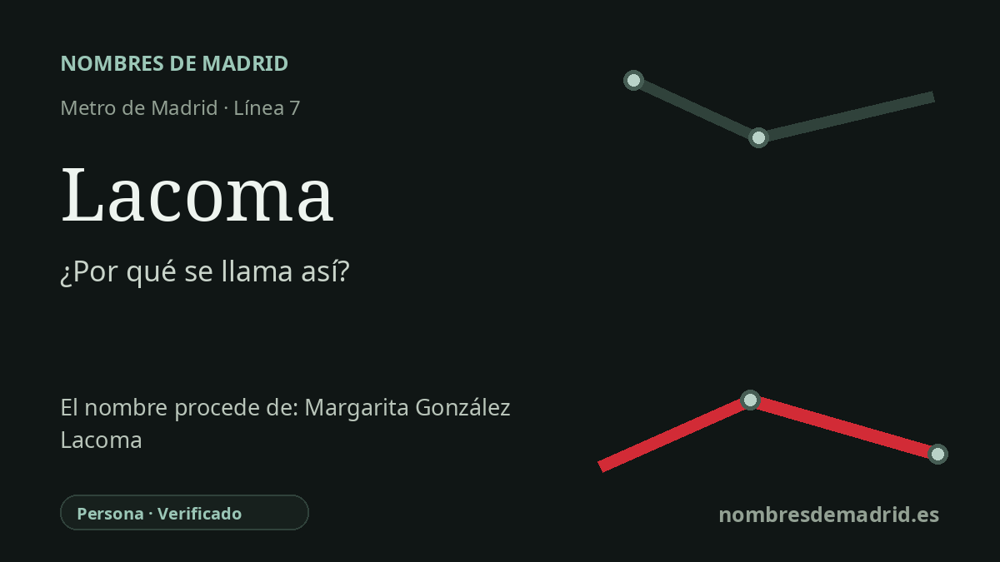

Publicado el · Investigación de Nombres de Madrid · Cómo verificamos cada origen · 7 fuentes consultadas
Respuesta rápida
Lacoma toma su nombre de la cercana Colonia Lacoma, vinculada a Margarita Gonzalez Lacoma, empresaria de la moda y del sector inmobiliario. La estacion abrio en la linea 7 el 29 de marzo de 1999, cuando el Metro llego a este extremo noroeste de Madrid.
La historia del nombre
El nombre de la estacion **Lacoma** procede del toponimo local, sobre todo de la **Colonia Lacoma** de Peñagrande. Esa colonia esta vinculada a Margarita Gonzalez Lacoma, empresaria madrileña cuyo apellido paso a identificar viviendas, calles y, finalmente, una estacion de la linea 7.
Margarita Lacoma fue conocida primero en el mundo de la moda. El catalogo municipal de patrimonio edificado de la Gran Via identifica Casa Lacoma como el salon de modas de Margarita Lacoma y situa su apertura en 1925, en el edificio de Seguros La Estrella de la Gran Via. Asi queda documentada su presencia en el comercio elegante de la nueva avenida antes de su relacion posterior con la periferia noroeste.
El vinculo urbanistico llega despues de la guerra, cuando Margarita Gonzalez Lacoma y Pilar Cudos Velasco aparecen en relatos historicos locales como promotoras de Marcudos, S.L. Historias Matritenses fecha esa sociedad en 1949 y afirma que ambas compraban terrenos desde 1947 en la zona que acabaria siendo Lacoma, con el objetivo de construir viviendas en alquiler o venta al amparo de la legislacion de viviendas bonificables. La documentacion municipal de regeneracion urbana confirma que la Colonia Lacoma fue construida en los años cincuenta y la describe como el primer nucleo urbano de Peñagrande.
Cuando la linea 7 se prolongo hacia el noroeste, la estacion tomo ese nombre local ya asentado, no el nombre completo de la persona. Memoria de Madrid documenta el acto de inauguracion del **29 de marzo de 1999** e identifica el acceso a la estacion de Lacoma durante la apertura del tramo Valdezarza-Pitis. El Pais informo al dia siguiente de la misma apertura y enumero Lacoma entre las cinco estaciones abiertas al publico en el nuevo tramo.
La secuencia apellido -> colonia o barrio -> estacion de Metro esta bien apoyada. El punto mas debil es la precision biografica: algunas fuentes modernas dan o sugieren un lugar de nacimiento concreto, mientras otras presentan los origenes de Margarita Gonzalez Lacoma como inciertos o relacionados con Valladolid y Santander. En la explicacion publica conviene centrarse en lo mejor documentado: Casa Lacoma en la Gran Via, la promocion inmobiliaria de Marcudos, la Colonia Lacoma de Peñagrande y la apertura del Metro en 1999.